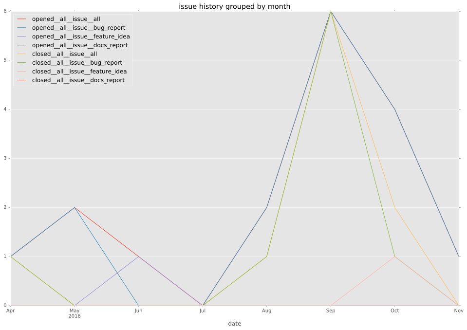
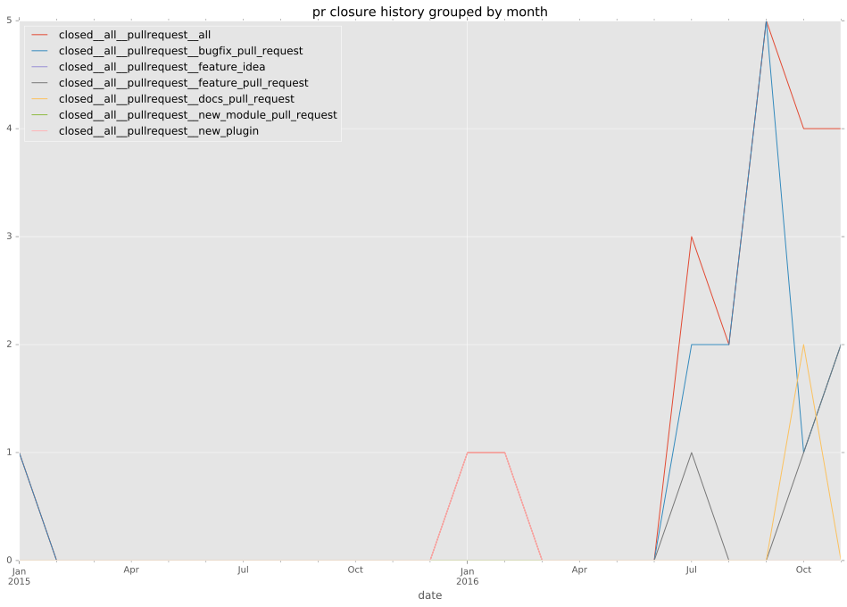

authors
- privateip
maintainers
- privateip
- gundalow
contributors
- privateip : 125 commits
- gundalow : 8 commits
- bordeltabernacle : 2 commits
- xmj : 1 commits
total issue counts
feature pull request: 2
pullrequest: 20
docs pull request: 1
bugfix pull request: 14
feature idea: 1
issue: 17
new plugin: 3
bug report: 16
issue history

pullrequest history

days open by issue type
bugfix pull request
count: 28
std: 1.19964721446
min: 0
max: 4
median: 0.0
mean: 0.571428571429
all
count: 48
std: 48.4077273519
min: 0
max: 321
median: 0.0
mean: 11.3958333333
pullrequest
count: 0
std: nan
min: nan
max: nan
median: nan
mean: nan
docs pull request
count: 2
std: 0.0
min: 8
max: 8
median: 8.0
mean: 8.0
feature pull request
count: 4
std: 0.0
min: 0
max: 0
median: 0.0
mean: 0.0
feature idea
count: 1
std: nan
min: 105
max: 105
median: 105.0
mean: 105.0
issue
count: 0
std: nan
min: nan
max: nan
median: nan
mean: nan
new plugin
count: 3
std: 172.791782212
min: 10
max: 321
median: 35.0
mean: 122.0
bug report
count: 10
std: 8.22192191644
min: 0
max: 23
median: 0.0
mean: 4.4
closures grouped by total days open